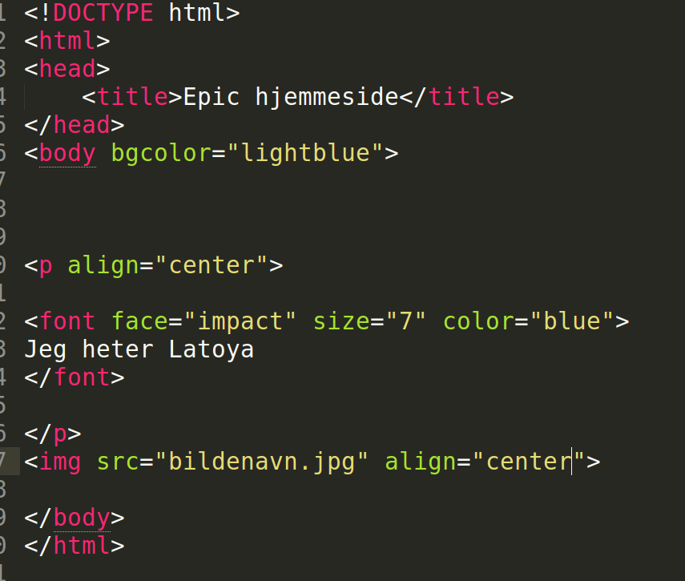

- Last ned et bilde du har lyst til å ha på hjemmesiden din,og lagre det i mappen din. (Der hvor du har kode-dokumentet for hjemmesiden din)
- Skriv inn < img src="bildenavn.jpg"> Hvis du vil ha bildet midt på siden kan du også skrive < align="center"> HUSK!! navnet på bildefilen din må ha akkurat samme navn i kode-filen din Og sjekk om bildet er jpeg,jpg,png, eller en annen type

- Hvis du vil ha bildet på venstre side; bytt ut center med left Hvis du vil ha den på høyre side; bytt ut center med right
- Lagre dokumentet , og oppdater hjemmesiden din i nettleseren for å se resultatet. Oppdatere gjør du ved å trykke F5 eller ↻